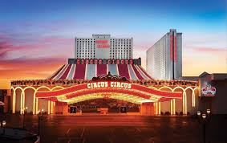

|  |
Weekend of June 26 & 27 - The Brothers Karamazov is a passionate philosophical novel set in 19th-century Russia, that enters deeply into the ethical debates of God, free will, and morality. |
|
Weekend of July 3 & 4 After working with the San Francisco Mime Troupe, the Pickle Family Jugglers (founded by Peggy Snider, Larry Pisoni, and Cecil MacKinnon) decided to create the Pickle Family Circus. |
|
|
Weekend ofJuly 10 & 11 - Penn & Teller (Penn Jillette and Teller) are American magicians and entertainers who have performed together since the late 1970s, noted for their ongoing act that combines elements of comedy with magic. |